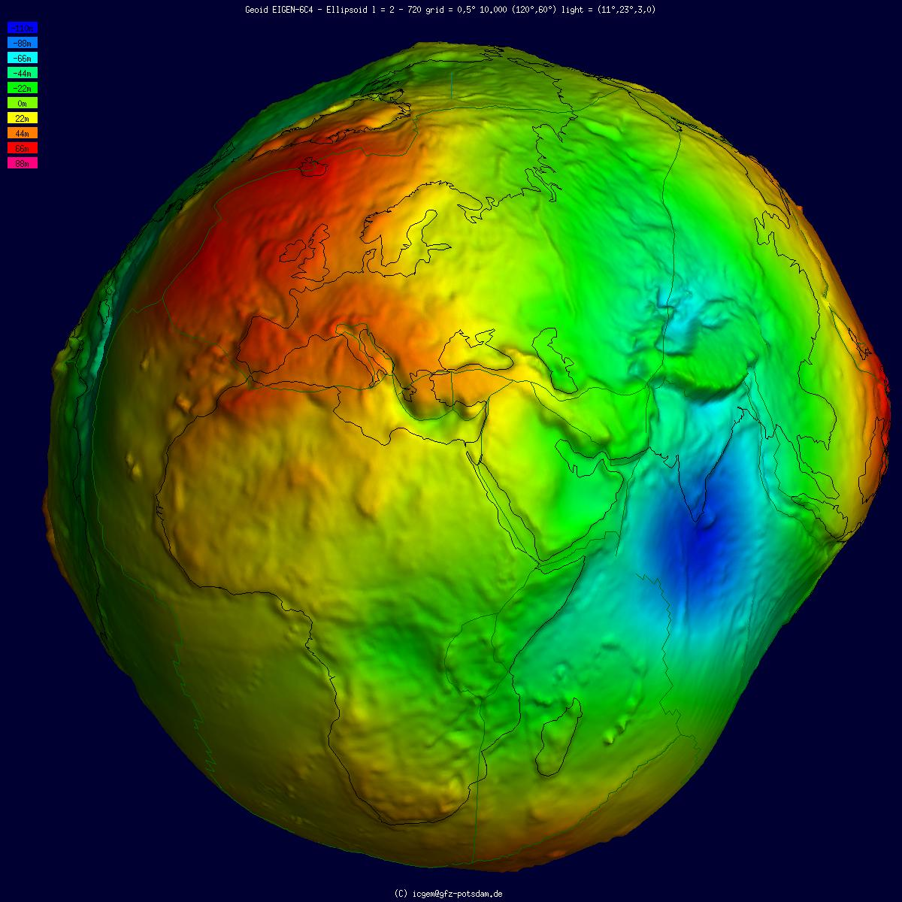
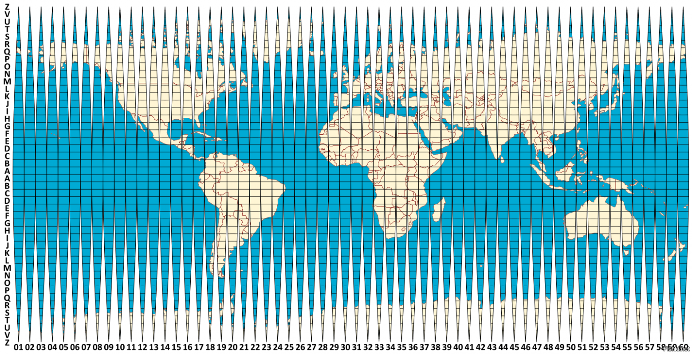
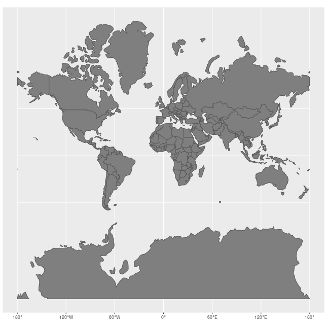
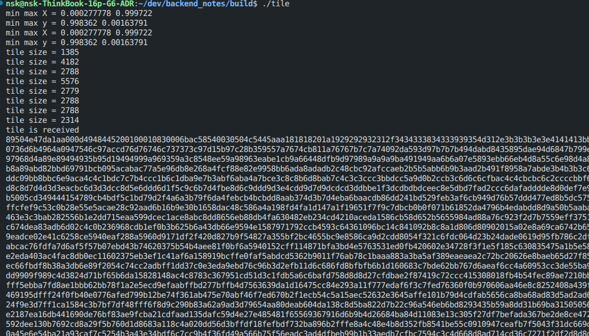
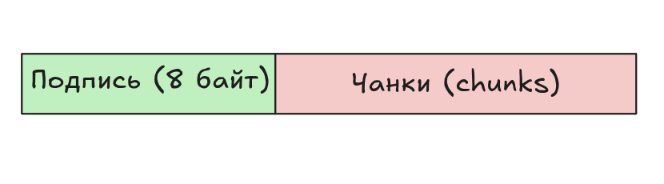
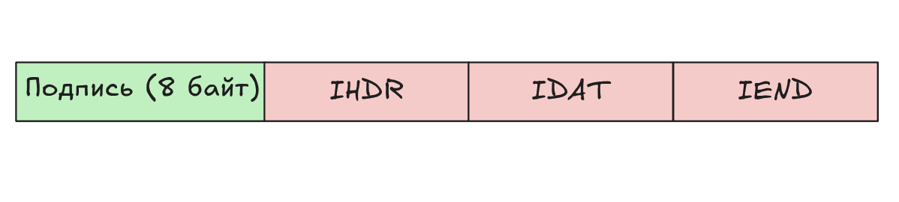
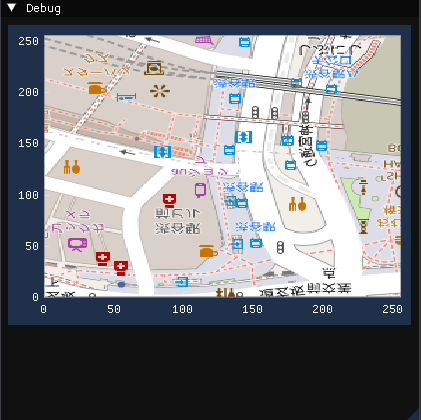

Получение тайлов карты (Open Street Map)
Данный материал частично основан на информации с источников:
Хорошая статья по ГИС;
Про системы координат;
И еще про проекции.
Картографические проекции и системы координат
Земля имеет форму, так называемого, геоида. Впервые фигуру геоида описал немецкий математик К. Ф. Гаусс, который определял её как «математическую фигуру Земли» — гладкую, но неправильную поверхность.
{kind=link}

Форма геоида обусловлена неравномерным распределением масс внутри и на поверхности Земли. Геоид является поверхностью, относительно которой ведётся отсчёт высот над уровнем моря, в силу чего точное знание параметров геоида необходимо, в частности, в навигации — для определения высоты над уровнем моря на основе геодезической (эллипсоидальной) высоты, измеряемой GPS-приёмниками, а также в физической океанологии — для определения высот морской поверхности.
Проблема геоида в обычной жизни?
Работать с элипсоидом (аппроксиморованный геоид) напрямую неудобно. Если мы работаем с маленькими масштабами на бумаге, нам потребуется ОГРОМНЫХ размеров глобус. И наоборот, при работе с большими масштабами, сложно было бы с таким глобусом охватить взглядом разные материки, например. Для многих задач намного удобнее использовать плоскую проекцию.
НО, создать плоскую проекцию Земли без искажений невозможно и точка. Не получится преобразовать глобус в плоскость без разрывов (кроме экватора):
{kind=link}

Для решений данной пробелемы существуют проекции сферы на плоскость, например, проекция Меркатора.
Проекция Меркатора
Проекция Меркатора является лишь одной из большого списка. Список некоторых проекций можно посмотреть здесь.
Это цилиндрическая проекция, которая сохраняет углы и формы объектов (равноугольная), но сильно искажает площади ближе к полюсам. Основные области использования — морская навигация, авиация, веб-карты (Google Maps, Яндекс.Карты, Open Street Map и др.) и крупномасштабные карты приэкваториальных областей.
{kind=link}

Пример искажений в проекции Меркатора. Авторство: Jakub Nowosad. Собственная работа, CC BY-SA 4.0, https://commons.wikimedia.org/w/index.php?curid=73955926
Про стандарты:
EPSG:4326— географическая система координат, основанная на системе параметровWGS84((World Geodetic System 1984) традиционно использует порядок широта — долгота, аEPSG 4326— долгота — широта.). Единица измерения — градус;EPSG:3857— прямоугольная система координат, основанная на проекции Меркатора, построенной по системе параметровWGS84. Единица измерения – метр.
Что такое тайлы?
Тайлы - это изображения небольшого размера (одинакового), являющиеся фрагментами большого изображения. В рамках работы с картами - это квадратные (обычно 256х256 пикселей, могут быть и 512x512) изображения, формирующие карту мира.
Они используются в веб-картографии (Google Maps, Яндекс Карты, OpenStreetMap) для быстрой загрузки: браузер загружает только те тайлы, которые видны на экране, экономя трафик и память.
Например, если открыть в браузере карту [OpenStreetMap.org](www.openstreetmap.org), перейти в режим разработчика (CTRL + SHIFT + I) во вкладке Network, мы увидим следующую картину:

Как web-карта (Open Street Map) получает изображения (тайлы)
, где увидим, что были загружены несколько изображений *.png со странными названиями файлов.
Например, 20726:

{kind=link}
Этот файл был получен при помощи запроса на сервер OpenStreetMap -
https://tile.openstreetmap.org/16/47867/20726.png.
OSM-карты (и не только они) присваивают каждому изображению свои наименования. Правила наименований описаны в статье:wiki.openstreetmap.org/wiki/Slippy_map_tilenames.
Правила наименований тайлов
Все тайлы имеют размер
256 × 256пикселей форматаPNG;Каждое значение масштаба карты (zoom level) является директорией, каждый столбец также является директорией, в которой находятся изображения;
Ссылка (
URL) на получения конкретного файла (*.png) формируется в формате:/zoom/x/y.png
Например, для масштаба карты 2 (zoom = 2) будут след. наименования:

Пример нумерации тайлов
Можно заметить, что:
Координата
Z- не меняется,Z = 2.Координаты
X- это столбцы матрицы,Y- строки матрицы.
Тайл серверы
С названиями координат изображений мы определились, но первая часть URL (например, tile.openstreetmap.org) отвечает за сервер, на который вы или ваше приложение будет отправлять запрос.
Name |
URL template |
zoomlevels |
|---|---|---|
OSM ‘standard’ style |
https://tile.openstreetmap.org/zoom/x/y.png |
0-19 |
OpenCycleMap |
http://[abc].tile.thunderforest.com/cycle/zoom/x/y.png |
0-22 |
Thunderforest Transport |
http://[abc].tile.thunderforest.com/transport/zoom/x/y.png |
0-22 |
MapTiles API Standard |
https://maptiles.p.rapidapi.com/local/osm/v1/zoom/x/y.png?rapidapi-key=YOUR-KEY |
0-19 globally |
MapTiles API English |
https://maptiles.p.rapidapi.com/en/map/v1/zoom/x/y.png?rapidapi-key=YOUR-KEY |
0-19 globally with English labels |
Масштаб (zoom levels)
Ниже приведена таблица по каждому уровню масштабирования (от 0 до 19). Более подробная таблица находится здесь.
zoom level |
tile coverage |
number of tiles |
tile size(*) in degrees |
|---|---|---|---|
0 |
1 tile covers whole world |
1 tile |
360° x 170.1022° |
1 |
2 × 2 tiles |
4 tiles |
180° x 85.0511° |
2 |
4 × 4 tiles |
16 tiles |
90° x [variable] |
n |
\(2^n × 2^n\) tiles |
\(2^{2n}\) tiles |
360/2<sup>n</sup> ° x [variable] |
12 |
4096 x 4096 tiles |
16 777 216 |
0.0879° x [variable] |
16 |
… |
\(2^{32}\) ≈ 4 295 million tiles |
… |
17 |
… |
17.2 billion tiles |
… |
18 |
… |
68.7 billion tiles |
… |
19 |
Maximum zoom for Mapnik layer |
274.9 billion tiles |
… |
Получение наименований тайлов
Вспомним про странные названия изображений, которые получает наш браузер: 20726.png.
Если посмотрим на полный путь до этого файла, то увидим: 16/47867/20726.png, где:
16- zoom;47867- это номер столбца (координатаX) во всей матрице тайлов для текущего масштаба;20726- это номер строки (или координатаY) в матрице.
Наша цель
Преобразовать GPS-координаты в позиции (X, Y) тайлов Меркатора.
Состоит из 4 этапов:
Преобразовать углы
Latitude,Longitudeв сферическую проекцию Меркатора (из EPSG:4326 в EPSG:3857) https://epsg.io/3857;Преобразовать значения
X,Yк отрезку[0 - 1], получая относительный квадрат;Получить количество всей тайлов для текущего масштаба (
zoom);Умножаем
XиYна количество тайлов - получаем “имена” тайлов в форматеzoom/x/y.
Математика
Преобразование в Web-проекцию Меркатора (из
Lat, LonвX, Y):
, где \(lon_{EPSG:4326}\) - longitude в системе EPSG:4326, \(X_{EPSG:3857}\) - X в системе Меркатора.
, где \(lat_{EPSG:4326}\) - latitude в системе EPSG:4326, \(Y_{EPSG:3857}\) - Y в системе Меркатора.
Нормируем к интервалу
(0, 1)
Считаем количество тайлов, которое есть на карте данного масштаба (см. Информация по тайлам для масштабов (0 - 19)):
, где \(N_{tiles}\) - количество тайлов, \(zoom\) - уровень масштабирования.
Получаем значения координат тайла (в матрице всех тайлов для \(2^{zoom}\))
Пример:
Возьмем координаты lat = 55.007969, lon = 82.944546 (широта, долгота), zoom = 16.
Этап |
Значения |
|---|---|
Web-Меркатор |
lat = 55.007969lon = 82.944546\(X_{EPSG:3857} = 82.944546\)
\(Y_{EPSG:3857} = 1.1544770655\)
|
Нормирование |
\(x = 0.73040151666\)
\(y = 0.31625926833\)
|
Масштаб |
\(2^{16} = 65536\) |
Точные индексы тайла по |
\(x_{tile} = 0.73040151666 * 65536 = 47867.5937958\)
\(y_{tile} = 0.31625926833 * 65536 = 20726.3674093\)
\(fractional_{x} =59.37958\) %
\(fractional_{y} =36.74093\) %;
|
Значения пикселей в картинке |
X - \(256 * 0.5937 = 151.9872\)
Y - \(256 * 0.3674 = 94.0544\)
|
С округлением вниз получаем: z = 16, x = 47867, y = 20726. Как мы можем заметить, это совпадает с запросом к тайл-серверу OpenStreetmap: https://tile.openstreetmap.org/16/47867/20726.png.
Получение тайлов из кода С / С++
Установка зависимостей и подключение к CMakeLists
Устанавливаем пакеты:
sudo apt install curl libstb-dev
Добавляем в CmakLists нашего проекта (пример с добавлением проект с ImGUI + PSQL):
include(FindPkgConfig)
pkg_check_modules(STB REQUIRED stb)
add_executable(tile ${EXAMPLES_DIR}/osm_tiles/tile_catcher.cpp)
target_link_libraries(tile PRIVATE imgui implot curl ${SDL2_LIBRARIES} ${OPENGL_LIBRARIES} ${GLEW_LIBRARIES} ${STB_LIBRARIES})
target_include_directories(tile PRIVATE ${STB_INCLUDE_DIRS})
Отправка запроса на тайл-сервер (curl)
На данном этапе мы уже знаем как, зная zoom и координаты Lat, Lon, получить необходмые нам значения X, Y.
Формируем и отправляем запрос:
...
#include <curl/curl.h>
...
// Наш callback при получении данных от libcurl
size_t onPullResponse(void *data, size_t size, size_t nmemb, void *userp) {
size_t realsize{size * nmemb};
auto &blob{*static_cast<std::vector<std::byte> *>(userp)};
auto const *const dataptr{static_cast<std::byte *>(data)};
blob.insert(blob.cend(), dataptr, dataptr + realsize);
std::cout << "Bytes received size = " << realsize << std::endl;
return realsize;
}
bool loaded = false;
int main()
{
// 0. Здесь нам нужно из координат Lat, Lon получить координаты X, Y, Z ()
int z, int x, int y;
std::vector<std::byte> &blob
// 1. Инициализируем структуру curl
CURL *curl{curl_easy_init()};
// 2. Формируем строку запроса, зная Z, X, Y
std::ostringstream urlmaker;
urlmaker << "https://a.tile.openstreetmap.org";
urlmaker << '/' << z << '/' << x << '/' << y << ".png";
// 3. Указываем строку (urlmaker) для структуры curl + немного настроект запроса
curl_easy_setopt(curl, CURLOPT_URL, urlmaker.c_str());
curl_easy_setopt(curl, CURLOPT_NOPROGRESS, 1L);
curl_easy_setopt(curl, CURLOPT_USERAGENT, "curl");
curl_easy_setopt(curl, CURLOPT_TIMEOUT, 1);
curl_easy_setopt(curl, CURLOPT_CONNECTTIMEOUT, 1);
// 3.1. Здесь говорим положить результать в массив байтиков blob
curl_easy_setopt(curl, CURLOPT_WRITEDATA, (void *)&blob);
// 3.2. При каждом поступлении данны (chunk'ов) вызывается callback, наша функция onPullResponse (функция определена выше)
curl_easy_setopt(curl, CURLOPT_WRITEFUNCTION, onPullResponse);
// 4. Собственно, выполнение запроса и проверка на его успешность выполнения.
const bool ok{curl_easy_perform(curl) == CURLE_OK};
curl_easy_cleanup(curl);
loaded = true;
// 5. Здесь уже получили .PNG-байтики, которые нужно отобразить на гарфике
return 0;
}
При выполнении данной программы (если мы захотим еще побайтово вывести информацию в консоль), мы получим след. результат :

Данные, полученные при помощи библиотеки curl
В текстовом виде это будет выглядеть след. образом, нам здесь важно начало байтового массива:
0x89 0x50 0x4e 0x47 0xd 0xa 0x1a 0xa 0x0 0x0 0x0 0xd 0x49 0x48 0x44 0x52 0x0 0x0 0x1 0x0 0x0 0x0 0x1 0x0 0x8 0x3 0x0 0x0
0x0 0x6b 0xac 0x58 0x54 0x0 0x0 0x3 0x0 0x50 0x4c 0x54 0x45 0xa 0xa 0xa 0x18 0x18 0x18 0x20 0x1a 0x19 0x29 0x29 0x29
0x32 0x31 0x2f 0x34 0x34 0x33 0x38 0x34 0x33 0x39 0x39 0x35 0x4d 0x31 0x2e 0x3b 0x3b 0x3b 0x3e 0x3e 0x41 0x41 0x41
0x3b 0xbf 0x0 0x0 0x73 0x4a 0x8 0x47 0x47 0x47 0x76 0x4f 0x10 0x7b 0x54 0x17 0x4d 0x4d 0x51 0x55 0x4d 0x4c 0xc6 0x16
0x16 0x55 0x55 0x4e 0x80 0x5b 0x1f 0x81 0x5d 0x23 0x57 0x56 0x56 0x1d 0x66 0x8a 0x7f 0x62 0x34 0x69 0x59 0x56 0x5d 0x5d
0x61 0x62 0x62 0x5c 0x89 0x69 0x33 0x68 0x68 0x68 0xb4 0x71 0x15 0xc7 0x74 0x0 0xc8 0x76 .........................
..................................................................................................................
.PNG изображения
Почитать про .PNG можно здесь;
{kind=link}
Вкратце, .png состоит из двух основных частей:
Подпись
.png;Чанки (
chunks) с данными.

Обобщенный формат PNG-файла
Подпись PNG
Подпись PNG-файла состоит из 8 байт и представляет собой (в hex-записи):
0x89 0x50 0x4e 0x47 0xd 0xa 0x1a 0xa
, где:
Значение (hex) |
Назначение |
|---|---|
0x89 |
Non-ASCII символ. Препятствует распознаванию PNG, как текстового файла. |
0x50 0x4e 0x47 |
PNG в ASCII записи. |
0D 0A |
CRLF (Carriage-return, Line-feed), DOS-style перевод строки. |
0x1a |
Останавливает вывод файла в DOS режиме (end-of-file), чтобы вам не вываливалось многокилобайтное изображение в текстовом виде. |
0xa |
LF, Unix-style перевод строки. |
Чанки (chunks) PNG
Чанки — это блоки данных, из которых состоит файл. Каждый чанк состоит из 4 секций.
Length (длина) |
Type (тип) |
Data (данные) |
CRC |
|---|---|---|---|
4 байта |
4 байта |
Length байт |
4 байта |
, где:
Длина — это числовое значение длины блока данных;
Тип - представляет собой 4 чувствительных к регистру
ASCII-символа;Данные - собственно, само изображение;
CRC - контрольная сумма для проверки целостности.
Также, важно отметить, что существуют Критические чанки:
IHDR— заголовок файла, содержит основную информацию о изображении. Обязан быть первым чанком.PLTE— палитра, список цветов.IDAT— содержит, собственно, изображение. Рисунок можно разбить на несколькоIDATчанков, для потоковой передачи. В каждом файле должен быть хотя бы один -IDATчанк.IEND— завершающий чанк, обязан быть последним в файле.
Минимальный PNG-файл выглядит следующим образом:

Минимальный PNG-файл.
Преобразование **.PNG ** в пиксельную карту (pixel map)
Преобразование будет выполнять при помощи библиотеки libstb-dev, которую мы подключили в CMakeLists в начале.
...
#include <stb_image.h>
...
int _width{256}, _height{256}, _channels{}; // Размеры изображения
std::vector<std::byte> _rawBlob; // То куда мы положили наши байтики PNG
std::vector<std::byte> _rgbaBlob; // В этот массив мы запишем значения Пикселей
GLuint _id{0};
// Преобразуем PNG в rgba-массив
void stbLoad() {
stbi_set_flip_vertically_on_load(false);
const auto ptr{
stbi_load_from_memory(reinterpret_cast<stbi_uc const *>(_rawBlob.data()),
static_cast<int>(_rawBlob.size()), &_width, &_height,
&_channels, STBI_rgb_alpha)};
if (ptr) {
const size_t nbytes{size_t(_width * _height * STBI_rgb_alpha)};
_rgbaBlob.resize(nbytes);
_rgbaBlob.shrink_to_fit();
const auto byteptr{reinterpret_cast<std::byte *>(ptr)};
_rgbaBlob.insert(_rgbaBlob.begin(), byteptr, byteptr + nbytes);
stbi_image_free(ptr);
}
}
// Преобразуем в текстуру GL
void glLoad(){
glGenTextures(1, &_id);
glBindTexture(GL_TEXTURE_2D, _id);
glTexParameteri(GL_TEXTURE_2D, GL_TEXTURE_MIN_FILTER, GL_NEAREST);
glTexParameteri(GL_TEXTURE_2D, GL_TEXTURE_MAG_FILTER, GL_NEAREST);
glPixelStorei(GL_UNPACK_ROW_LENGTH, 0);
glTexImage2D(GL_TEXTURE_2D, 0, GL_RGBA, _width, _height, 0, GL_RGBA,
GL_UNSIGNED_BYTE, _rgbaBlob.data());
}
int main(){
...
while(1){
...
ImPlot::BeginPlot("##ImOsmMapPlot");
// Параметры для отображения картинки
ImVec2 _uv0{0, 1}; // Top-left of the texture
ImVec2 _uv1{1, 0}; // Bottom-right of the texture
ImVec4 _tint{1, 1, 1, 1}; // Цвет, накладываемый поверх нашего изображения
ImVec2 bmin{0, 0};
ImVec2 bmax{256, 256};
stbLoad();
glLoad();
// Отображаем текстуру GL - _id, которую мы создали из RGBa
ImPlot::PlotImage("##", _id, bmin, bmax, _uv0, _uv1, _tint);
ImPlot::EndPlot();
...
}
...
}
Готово:

Результат.